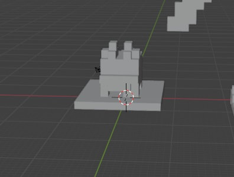
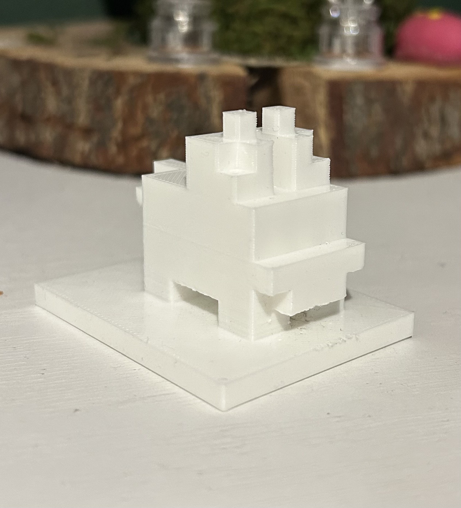

Kimberly Ordonez Molina


In this project, after I finished my work on the video game app, I moved the Minecraft world into a new file and launched "mineways" which is what I used to run the world format my build was on. I selected my structure and opened up the software app "Blender" and the image is a look into how it looked in the software used to render it. After I turned it in to a STL file in where I sent to be 3D printed, the one of the top is how it looked in process of the program and the one on the bottom is the end result of the 3D print.